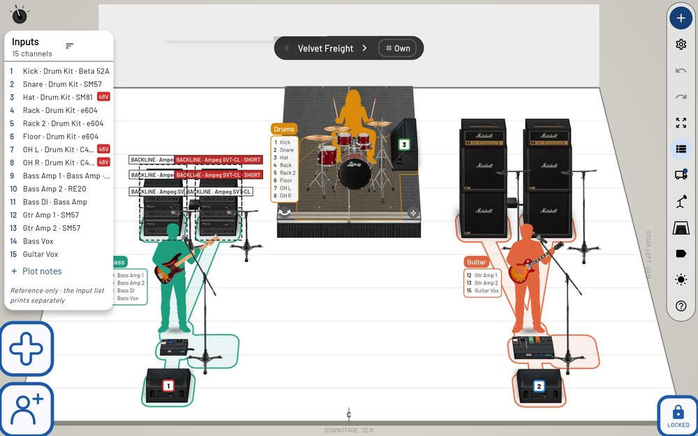

Stage plots

The stage
People are silhouettes in their colour holding their own instrument; amps, kits, wedges and boxes are drawn at real size. Drag to move (a person and their gear move together), tap for the strip of choices at the bottom. The toolbar on the right: add gear, settings, undo / redo, fit, the input list, backline (the truck), mics and stands, stage size, labels, look and help. LOCKED (bottom right) stops a stray drag.
Inputs, mixes and stands
Channels number themselves; the knob by the input list turns through List, Both, By person and Mixes. Wedges and in-ear packs carry a mix number. Tap a mic for its stand. A DI's 48V (red when on) and mono / stereo are in its strip.
Drums
Kits are drawn from their pieces at real size; tap a kit for the Kit builder (sizes, + Add piece, Jazz / Rock / Big) with the kit's extras, drum area and drummer's monitor.
Printing and sending
Options → Export → Send (PDF) checks the plot first, then makes one PDF — the stage, the input list, mixes and the Backline page — with the plot's own file inside it, so it opens as a plot again. It prints clearly in black and white. Share by QR shows the whole plot as a QR; the printed stage carries it in its corner.